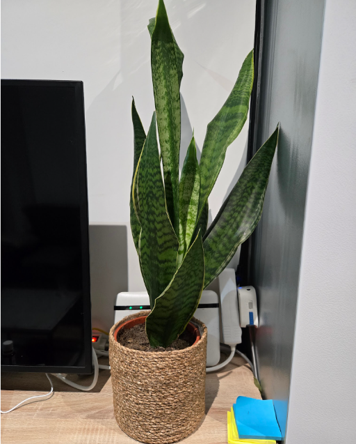
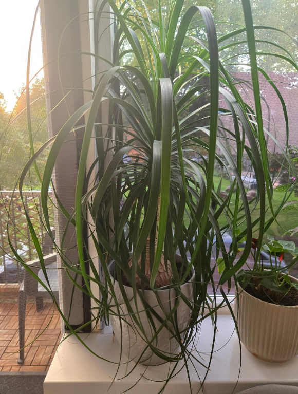
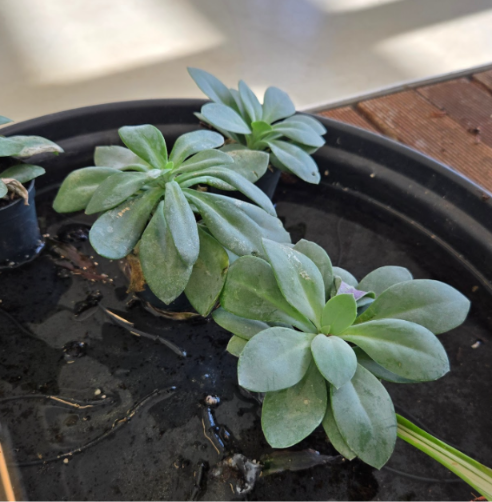

1. Snake Plant The snake plant is one of the most popular beginner indoor plants, and not for no reason. It’s one of the easiest plants to take care of, very forgiving when you forget about it. Light: Low to bright indirect sunlight Water: Only when the soil is completely dry 
2. Ponytail Palm Ponytail palms, or elephant foot palms, are long-lived indoor plants that are straightforward to grow, as long as you don’t overwater it. Ponytail palm prefers bright indirect light, ideally near a sunny window. However be warned to avoid harsh afternoon sunlight that can scorch leaves. Water deeply but infrequently. This plant is very capable of storing water so it’s easy to overwater it. Water it when the 5 cm of soil has dried. Light: Bright indirect sunlight Water: Water infrequently but deeply 
3. ZZ Plant ZZ plant, or also known as Zanzibar Gem and Eternity Plant, is also amazing choice for someone looking for low-maintenance plant. The ZZ plant is well-suited for environments with low light and low humidity, which means you can place it whenever you want. It can also survive months without water. Light: Any indirect light Water: Water when soil is completely dry
4. Daisy Paintbrush Daisy paintbrush is a succulent plant known for its low-maintenance requirements. The only real worry with this plant is having to be careful to not overwater it, because it requires minimal watering, you should allow the soil to dry out. This plant thrives in full sun, so if you can think of a place where it can get plenty of sunshine, this is a plant for you. Light: Full light Water: Every 3 weeks 
 Contact
Contact